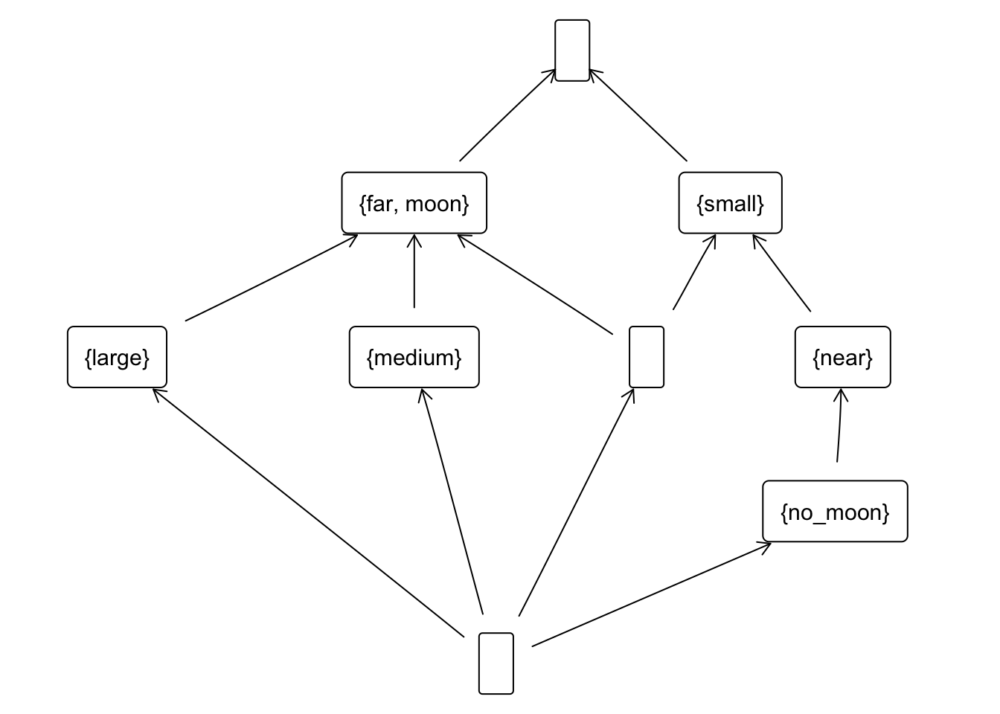

{Mercury, Earth, Mars}Given the set of objects:{Earth}The intent is:{small, near, moon}{small, near}Earth and Earth,Mars, Mercury (use the argument attributes in the class Set).{Mercury, Earth, Mars}Given the set of objects:{Earth}The intent is:{small, near, moon}{small, near}large and far,large (use the argument attributes in the class Set) and save the result in a variable e1, e2.Given the set of objects:{large}{large, far}The extent is:{Jupiter, Saturn}{Jupiter, Saturn}e1 and also of e2.{large, far, moon}{large, far, moon}With the information from the above questions tell me a concept. Check with any command of fcaR package.
Compute the closure of no_moon
{small, near, no_moon}({Earth, Mars, Jupiter, Saturn, Uranus, Neptune, Pluto}, {moon})A set of 2 concepts:
1: ({Mercury, Venus, Earth, Mars, Jupiter, Saturn, Uranus, Neptune, Pluto}, {})
2: ({}, {small, medium, large, near, far, moon, no_moon})
({Earth, Mars, Jupiter, Saturn, Uranus, Neptune, Pluto}, {moon})({Mercury, Venus}, {small, near, no_moon})({Pluto}, {small, far, moon})({Earth, Mars}, {small, near, moon})A set of 7 concepts:
1: ({Earth, Mars, Jupiter, Saturn, Uranus, Neptune, Pluto}, {moon})
2: ({Jupiter, Saturn, Uranus, Neptune, Pluto}, {far, moon})
3: ({Jupiter, Saturn}, {large, far, moon})
4: ({Uranus, Neptune}, {medium, far, moon})
5: ({Mercury, Venus, Earth, Mars, Pluto}, {small})
6: ({Mercury, Venus, Earth, Mars}, {small, near})
7: ({Mercury, Venus}, {small, near, no_moon})A set of 12 concepts:
1: ({Mercury, Venus, Earth, Mars, Jupiter, Saturn, Uranus, Neptune, Pluto}, {})
2: ({Earth, Mars, Jupiter, Saturn, Uranus, Neptune, Pluto}, {moon})
3: ({Jupiter, Saturn, Uranus, Neptune, Pluto}, {far, moon})
4: ({Jupiter, Saturn}, {large, far, moon})
5: ({Uranus, Neptune}, {medium, far, moon})
6: ({Mercury, Venus, Earth, Mars, Pluto}, {small})
7: ({Earth, Mars, Pluto}, {small, moon})
8: ({Pluto}, {small, far, moon})
9: ({Mercury, Venus, Earth, Mars}, {small, near})
10: ({Mercury, Venus}, {small, near, no_moon})
11: ({Earth, Mars}, {small, near, moon})
12: ({}, {small, medium, large, near, far, moon, no_moon})A set of 9 concepts:
1: ({Mercury, Venus, Earth, Mars, Jupiter, Saturn, Uranus, Neptune, Pluto}, {})
2: ({Jupiter, Saturn, Uranus, Neptune, Pluto}, {far, moon})
3: ({Jupiter, Saturn}, {large, far, moon})
4: ({Uranus, Neptune}, {medium, far, moon})
5: ({Mercury, Venus, Earth, Mars, Pluto}, {small})
6: ({Pluto}, {small, far, moon})
7: ({Mercury, Venus, Earth, Mars}, {small, near})
8: ({Mercury, Venus}, {small, near, no_moon})
9: ({}, {small, medium, large, near, far, moon, no_moon})
in_concept <- function(formal_context, attribute=xxx){
...
#si en
return(list(index=..., labels=...))
}